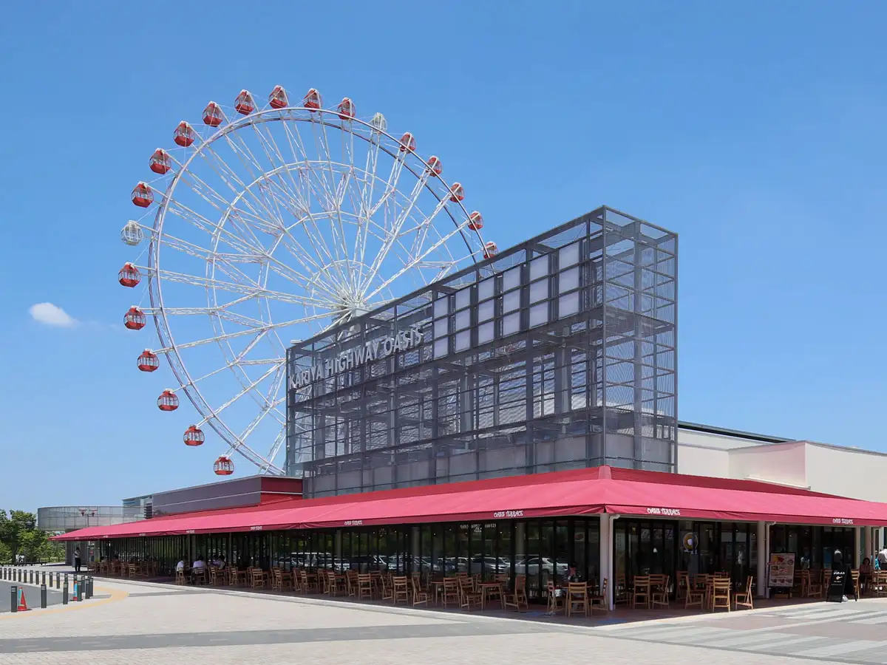
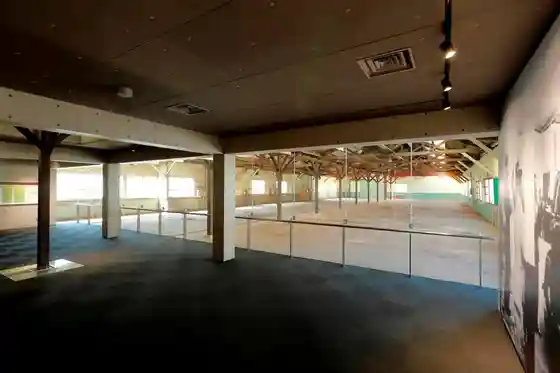
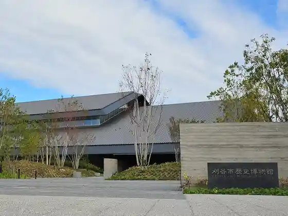
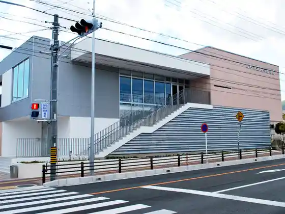

Japan / Aichi / Kariya
Kariya, Aichi
Kariya · Aichi
Kariya
Highlighted on the Aichi map.

Sights
Kariya Haiueioashisu
Kariya, Aichi · 0566-35-0211 · Official / source link
Toyota Sogyo Ki Shisaku Kojo
Kariya, Aichi · 0566-29-4151 · Official / source link

Kariya History Museum
Kariya, Aichi · 0566-63-6100 · Official / source link

Kariya Kotsu Jido Yuen
Kariya, Aichi · 0566-22-9371 · Official / source link

Kotsutsumi Nishiike no Kakitsubata Gunraku
Kariya, Aichi · 0566-62-1037 · Official / source link
Misasaga Park (Saruwatari Park)
Kariya, Aichi · 0566-87-4586 · Official / source link
Uotaparesu KC
Kariya, Aichi · 0566-24-6261 · Official / source link
Kariya Art Museum
Kariya, Aichi · 0566-23-1636 · Official / source link
Yume to Manabi no Kagaku Taiken Kan
Kariya, Aichi · 0566-24-0311 · Official / source link
Denso Museum
Kariya, Aichi · 0566-61-7215 · Official / source link